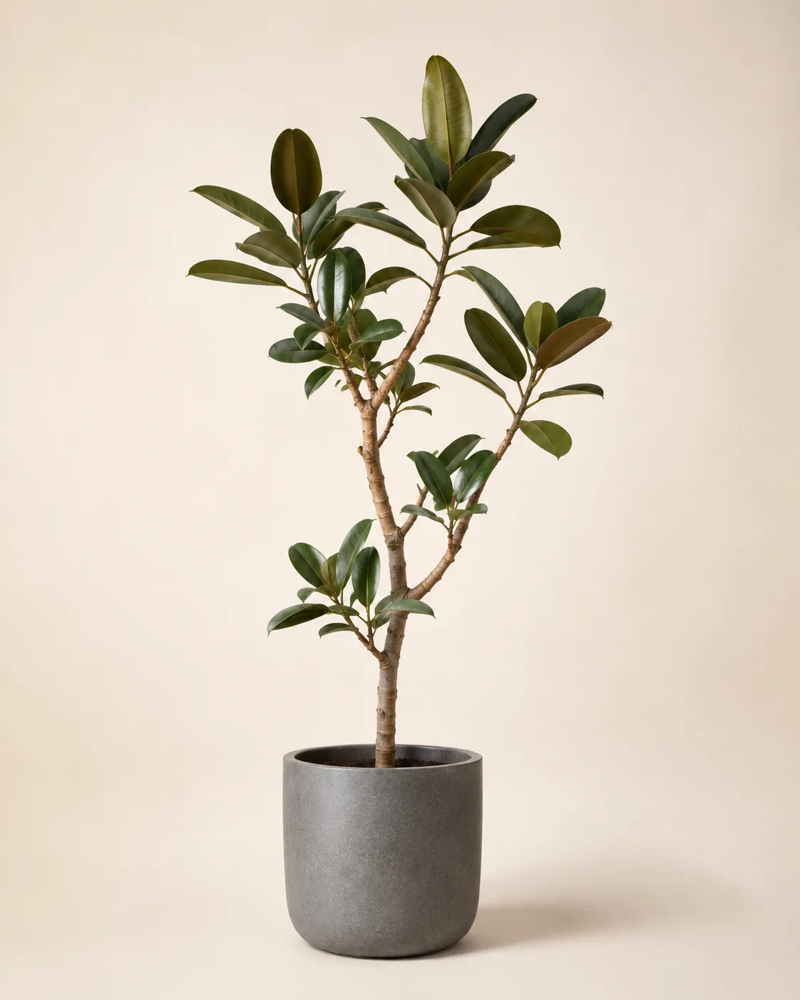
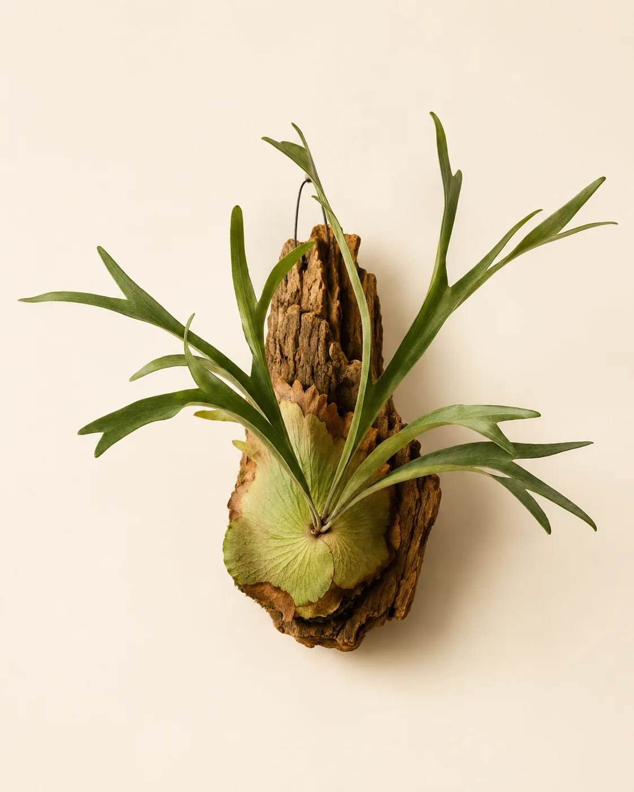

冬の観葉植物の管理｜水やりを減らす時期と置き場所（熊本の冬越し）

寒くなると、観葉植物の葉が黄色くなったり、元気がなくなったりしませんか。この記事では、冬の水やりの減らし方、置き場所の選び方、植物ごとの寒さの目安を、明け方の冷え込みが強い熊本の冬に合わせてまとめました。
冬になると観葉植物が弱りやすいのはなぜ？
観葉植物の多くは、もともと暖かい地域で育つ植物です。気温が下がると成長がゆっくりになり、水や栄養をあまり使わなくなります。いわば「お休みモード」に入るわけです。
ところが、人の側は夏と同じ感覚でお世話を続けてしまいがちです。使われない水が鉢の中に長く残ると、根が呼吸しにくくなり、傷む原因になります。冬によくある失敗の一つが、この「水のあげすぎ」です。
熊本の冬は何に気をつければいい？
熊本市周辺は、冬でも晴れて日差しのある日が多い一方、よく晴れた日の明け方は冷え込みやすい地域です。気象庁の平年値（熊本）を見ると、1月の最低気温は平均で1〜2℃ほど。日中との差が大きくなりやすいのが特徴です。
室内がどこまで冷えるかは、家の断熱や暖房の使い方によって大きく変わります。ただ、窓ガラスのそばは外の冷え込みの影響を受けやすく、昼間は日が当たって暖かかった窓辺が、明け方には部屋の中でいちばん寒い場所になることがあります。植物にとってつらいのは、こうした急な温度の上がり下がりです。
冬支度を始める時期は、カレンダーより「最低気温」を目安にするのがおすすめです。熊本の平年値に当てはめると、おおよそ次のような流れになります。寒さに弱い植物は、これより早めに動かしてください（植物ごとの目安は後半でまとめています）。
- 最低気温15℃前後（平年だと10月中旬ごろ）：水やりの間隔を少しずつあけ始める
- 最低気温10℃前後（平年だと11月上旬ごろ）：ベランダや屋外に出している鉢を室内に入れる
- 最低気温5℃前後（平年だと12月上旬ごろ）：外の冷え込みが本格的に。夜は窓際の鉢を部屋の内側へ
年によって冷え込みの時期は前後するので、天気予報とあわせて調整してください。置き場所に温度計をひとつ置いておくと、「この窓辺は明け方に何℃まで下がるのか」が分かり、判断がぐっと楽になります。
冬の水やりはどのくらい減らす？
生育期（春〜秋）は「土の表面が乾いたらたっぷり」が基本ですが、冬はそこから少し間をあけます。多くの場合、表面が乾いてから数日待つくらいがちょうどよくなります。
ただし、暖房の効いた暖かい部屋で冬も新しい葉を出している株や、苔玉のように乾きやすいものは、待ちすぎると水切れします。日数ではなく、次の手順で土の中の乾き具合を見て決めるのが基本です。
- 土の表面が乾いているかを見る
- 指を土に差し込んだり、鉢を持ち上げて重さを比べたりして、中の乾き具合も確かめる
- 中まで乾いてきたら、鉢底から少し流れ出る程度に水をあげる
- 受け皿に溜まった水は捨てる
鉢を持ち上げて重さを覚えておく方法は、特に大きめの鉢で役立ちます。水をあげた直後の重さと比べて、はっきり軽くなっていれば乾いてきたサインです。
夏に週2回あげていた鉢でも、冬は10日〜2週間に1回ほどになることがあります。ただ、部屋の暖かさや鉢の大きさ、土の種類で乾き方は大きく変わります。「何日おき」と決めてしまうより、そのつど土の状態を見て判断するのが確実です。

水をあげる時間と温度
冬の水やりは、よく晴れた日の午前中がおすすめです。夕方以降にあげると、鉢の中が湿って冷えたまま夜を迎えることになります。
冷たい水道水をそのまま注ぐと根に負担がかかることがあるため、汲み置きして室温に近づけた水を使います。
葉水（はみず）は午前中に
土への水やりを減らしても、霧吹きで葉に水をかける「葉水」は続けてかまいません。暖房で乾いた部屋では、葉の先が茶色くなったり、ハダニがつきやすくなったりすることがあります。葉水は、葉についたホコリを落としたり、葉の様子をこまめに観察するきっかけになったりします。
ただし、葉水で湿度が上がるのはほんの一時的で、乾燥対策の主役にはなりません。乾燥が気になる部屋では、加湿器を使う・温風の当たらない場所に移すほうが効果的です。葉が濡れたまま夜を迎えないよう、葉水も水やりと同じく午前中に済ませましょう。
置き場所はどこが正解？
冬の置き場所のポイントは、「明るさ」と「温度の安定」を両立させることです。
- 昼間：レースのカーテン越しに日が入る窓辺。冬の日差しはやわらかく、日照時間も短いので、できるだけ明るい場所に
- 夜：窓から1mほど内側。冷え込む日は、カーテンを閉めて窓からの冷気をさえぎる
- 避けたい場所：エアコンやヒーターの風が直接当たる場所、玄関や廊下など夜にぐっと冷える場所
毎日移動させるのが大変なら、窓から少し離れた明るい場所に定位置を決めてしまうのも一つの方法です。鉢の下に木の台やコルクマットを敷くだけでも、床からの冷えをやわらげられます。
暖房との付き合い方
エアコンの温風は、植物の葉から水分を奪います。風の通り道に鉢があると、数日で葉がカサカサになってしまうこともあります。
加湿器を使っている部屋なら、植物にとっても過ごしやすくなります。加湿器がない場合も、温風が当たらない位置に動かすだけで、葉の傷み方はかなり変わります。
冬に植物を買って帰るときは
寒い時期に植物をお迎えするときは、持ち帰る道のりにも少し気を配ってください。冷たい風に当たると葉が傷むことがあるので、袋や紙でふんわり包み、車の中でも暖房の風が直接当たらない場所に置きましょう。家に着いたら、まずは明るくて温度の安定した場所で数日なじませてから、定位置に移してあげてください。
植物ごとの寒さの目安は？
同じ観葉植物でも、寒さへの強さはさまざまです。HYGGEのホームページでも紹介している植物について、冬の管理の目安をまとめました。
ここでいう温度は「枯れない限界」ではなく、「元気に冬を越してほしいなら保ちたい室温」です。品種や株の大きさ、寒さに当たる時間の長さで変わるので、葉の様子を見ながら調整してください。
- ガジュマル・フィカス・ウンベラータ：10℃以上あると安心。観葉植物の中では寒さに比較的強いほうだが、窓際での冷え込みには注意
- モンステラ：10℃以上を保ちたい。葉が大きく窓の冷気を受けやすいので、夜は窓から離す
- アロカシア：寒さに弱い代表格。15℃前後あると安心で、10℃を下回ると葉を落として休むことがある
- ビカクシダ：品種によって寒さへの強さに差があるが、10℃以上あれば安心。吊り下げや板付けは窓の近くに飾りがちなので、置き場所の温度をまめに確かめる
- 苔玉：寒さへの強さは植えてある植物しだい。苔の部分は乾きやすいので、暖房の風が当たらない場所に置く
アロカシアのように冬に葉を落としても、根元が固く、根が傷んでいなければ、暖かくなってから新しい葉を出すことがあります。葉が減ったからといって慌てて水や肥料を足さず、土を乾かし気味にして見守りましょう。
モンステラの年間を通した育て方はモンステラの育て方｜熊本の気候に合わせた水やりと置き場所、ビカクシダについてはビカクシダの育て方でも詳しく紹介しています。

冬にやらないほうがいいことは？
冬のあいだは、次のようなお世話はお休みするのが無難です。
- 肥料：成長がゆっくりな時期は栄養を吸いきれず、かえって根を傷めることがあります。再開は暖かくなってから
- 植え替え・株分け：根を触ると回復に時間がかかります。鉢が窮屈そうでも、春まで待つのがおすすめです
- 大きな剪定：傷んだ葉を取り除く程度にとどめ、形を整える剪定は春以降に
「元気がないから何かしてあげたい」という気持ちになりますが、冬は手をかけすぎないことが一番のお世話です。
まとめ
冬の観葉植物は、ポイントを押さえれば怖くありません。
- 水やりは日数でなく、土の中や鉢の重さで乾き具合を確かめてから
- 昼は明るい窓辺、冷え込む夜は窓から離れた場所へ
- 暖房の風は直接当てず、葉水は午前中に
- 肥料・植え替えは春までお休み
熊本の冬は明け方の冷え込みがポイントです。温度計で置き場所の温度を知っておくと、迷わず判断できるようになります。春にまた新しい葉が出てくるのを楽しみに、ゆっくり見守ってあげてください。
よくある質問
- 冬に葉がしおれていたら、水をあげたほうがいい？
- まず土の中まで指で確かめてください。土がしっかり乾いていれば水不足の可能性があるので、暖かい日の午前中に水をあげ、置き場所が寒すぎないかもあわせて見直します。土が湿っているのにしおれている場合は、寒さや根の傷みが原因のことがあるため、水は足さずに暖かい場所へ移して様子を見ます。
- 冬に葉が黄色くなって落ちるのは枯れているサイン？
- 寒さや日照不足で古い葉を落とすのは、冬にはよくあることです。ただ、根元や茎がやわらかくなっている、土から嫌なにおいがする場合は根腐れの疑いがあります。その場合は水やりを止めて土を乾かし、早めにお店や詳しい人に相談してください。
- 夜だけ暖房を切る部屋に置いても大丈夫？
- 植物のそばに温度計を置いて、明け方の温度を一度確かめてみてください。多くの観葉植物は10℃を下回らなければ冬を越しやすく、それより下がる場合は、夜だけでも暖房を使う部屋や部屋の内側に移すと安心です。
- 冬でも日に当てたほうがいい？
- はい。冬は日照時間が短いので、レースのカーテン越しの明るい場所に置き、日の光を受けられるようにします。明るさが足りないと、茎がひょろひょろと伸びたり、葉の色が薄くなったりすることがあります。
HYGGE（ヒュッゲ）のお店
観葉植物と北欧雑貨のお店です。実物を見て選びたい方は、お気軽にお立ち寄りください。
熊本市南区幸田1丁目7-15／11:00〜17:00（水・土定休）／駐車スペースあり